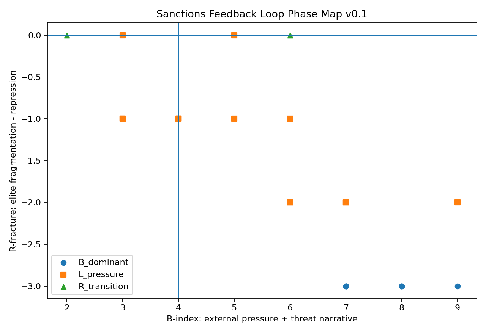

This dataset explores whether external pressure always weakens authoritarian regimes, or whether under certain conditions it may reinforce internal survival narratives and delay transition.
B-index = sanction_intensity + military_pressure + external_threat_narrativeR-fracture = elite_fragmentation - repression_intensityS4_transition: r_fracture >= 1 AND b_index <= 4R_transition: r_fracture >= 0 AND protest_frequency >= 2L_pressure: economic_stress >= 2 AND protest_frequency >= 1B_dominant: defaultThe map places each country-year on a pressure/fracture coordinate system. It is a reproducible coordinate, not a final political judgment.

B_dominant: 10L_pressure: 18R_transition: 2| ID | Country | Year | B-index | R-fracture | Phase | Notes |
|---|---|---|---|---|---|---|
| IRN-2016 | Iran | 2016 | 4 | -1 | L_pressure | provisional ordinal label; annual aggregate |
| IRN-2017 | Iran | 2017 | 4 | -1 | L_pressure | provisional ordinal label; annual aggregate |
| IRN-2018 | Iran | 2018 | 6 | -2 | L_pressure | provisional ordinal label; annual aggregate |
| IRN-2019 | Iran | 2019 | 7 | -2 | L_pressure | provisional ordinal label; annual aggregate |
| IRN-2020 | Iran | 2020 | 7 | -2 | L_pressure | provisional ordinal label; annual aggregate |
| IRN-2021 | Iran | 2021 | 6 | -1 | L_pressure | provisional ordinal label; annual aggregate |
| IRN-2022 | Iran | 2022 | 6 | -2 | L_pressure | provisional ordinal label; annual aggregate |
| IRN-2023 | Iran | 2023 | 6 | -2 | L_pressure | provisional ordinal label; annual aggregate |
| IRN-2024 | Iran | 2024 | 7 | -2 | L_pressure | provisional ordinal label; annual aggregate |
| IRN-2025 | Iran | 2025 | 9 | -2 | L_pressure | provisional ordinal label; annual aggregate |
| VEN-2016 | Venezuela | 2016 | 2 | 0 | R_transition | provisional ordinal label; annual aggregate |
| VEN-2017 | Venezuela | 2017 | 3 | -1 | L_pressure | provisional ordinal label; annual aggregate |
| VEN-2018 | Venezuela | 2018 | 4 | -1 | L_pressure | provisional ordinal label; annual aggregate |
| VEN-2019 | Venezuela | 2019 | 6 | 0 | R_transition | provisional ordinal label; annual aggregate |
| VEN-2020 | Venezuela | 2020 | 5 | -1 | L_pressure | provisional ordinal label; annual aggregate |
| VEN-2021 | Venezuela | 2021 | 5 | 0 | L_pressure | provisional ordinal label; annual aggregate |
| VEN-2022 | Venezuela | 2022 | 3 | 0 | L_pressure | provisional ordinal label; annual aggregate |
| VEN-2023 | Venezuela | 2023 | 3 | -1 | L_pressure | provisional ordinal label; annual aggregate |
| VEN-2024 | Venezuela | 2024 | 4 | -1 | L_pressure | provisional ordinal label; annual aggregate |
| VEN-2025 | Venezuela | 2025 | 3 | -1 | L_pressure | provisional ordinal label; annual aggregate |
| PRK-2016 | North Korea | 2016 | 7 | -3 | B_dominant | provisional ordinal label; annual aggregate |
| PRK-2017 | North Korea | 2017 | 9 | -3 | B_dominant | provisional ordinal label; annual aggregate |
| PRK-2018 | North Korea | 2018 | 7 | -3 | B_dominant | provisional ordinal label; annual aggregate |
| PRK-2019 | North Korea | 2019 | 7 | -3 | B_dominant | provisional ordinal label; annual aggregate |
| PRK-2020 | North Korea | 2020 | 7 | -3 | B_dominant | provisional ordinal label; annual aggregate |
| PRK-2021 | North Korea | 2021 | 7 | -3 | B_dominant | provisional ordinal label; annual aggregate |
| PRK-2022 | North Korea | 2022 | 8 | -3 | B_dominant | provisional ordinal label; annual aggregate |
| PRK-2023 | North Korea | 2023 | 8 | -3 | B_dominant | provisional ordinal label; annual aggregate |
| PRK-2024 | North Korea | 2024 | 8 | -3 | B_dominant | provisional ordinal label; annual aggregate |
| PRK-2025 | North Korea | 2025 | 8 | -3 | B_dominant | provisional ordinal label; annual aggregate |
This v0.1 release is a small hand-labeled observation dataset for schema and phase-rule validation. It should not be treated as a definitive empirical assessment.